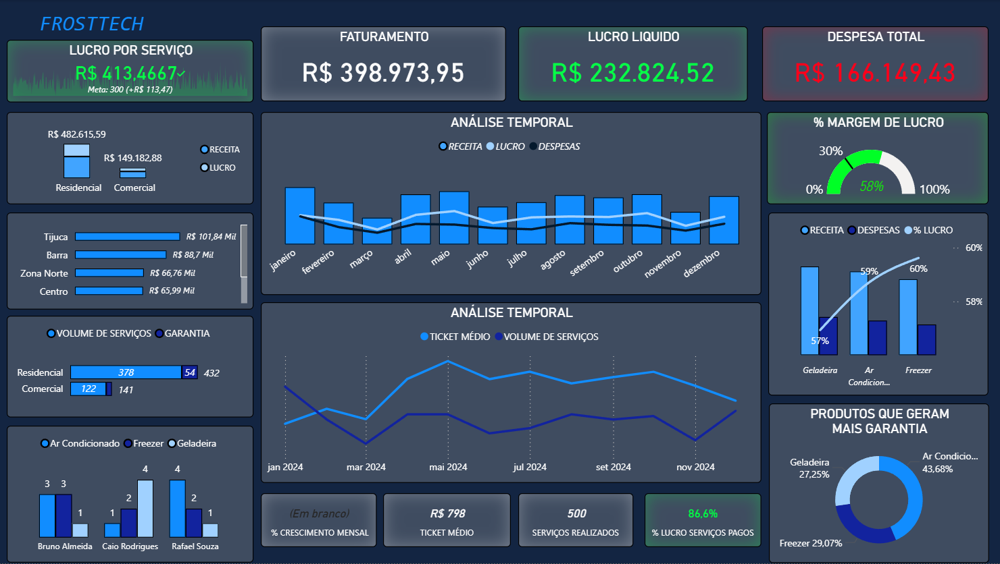
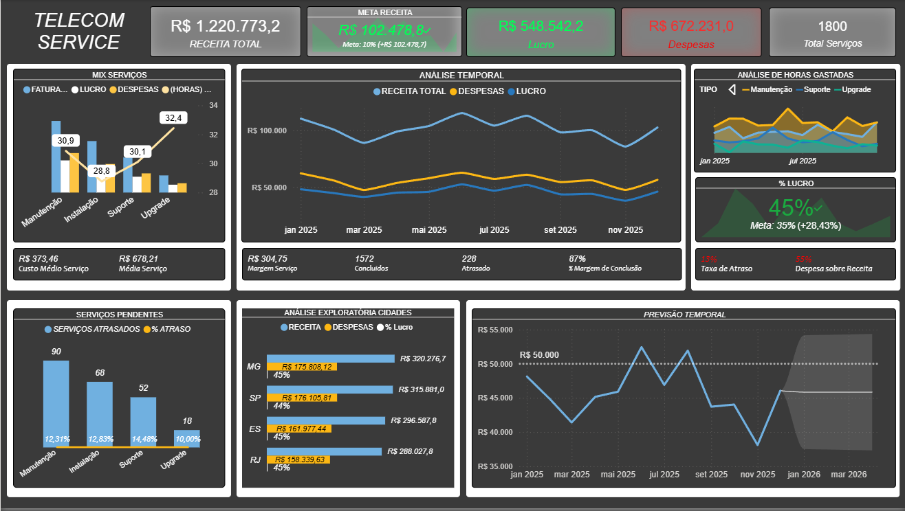
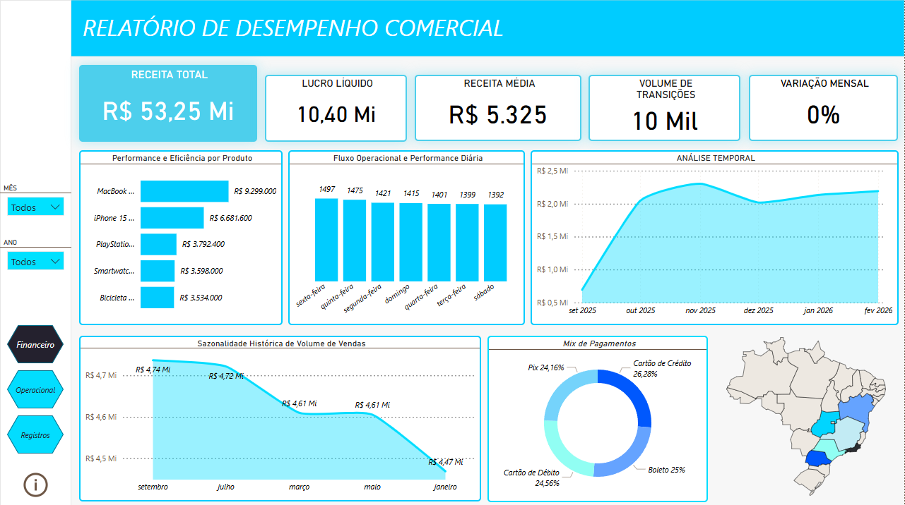
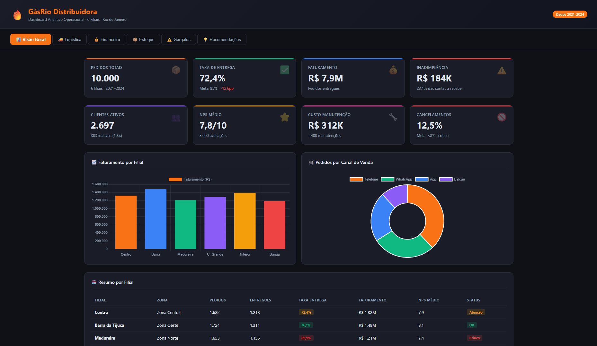

Transformo dados brutos em decisões estratégicas.
Especialista em Business Intelligence com foco em análise financeira, operacional e comportamental.
Minha jornada em dados começou de forma não convencional. Após anos trabalhando como técnico de refrigeração autônomo, percebi que os problemas mais interessantes não estavam nos equipamentos — estavam nos números.
Decidi fazer a transição para análise de dados de forma 100% autodidata. Usando apenas um PC e recursos gratuitos do YouTube, construí uma base sólida em SQL, Power BI, Python e Business Intelligence.
Hoje, aplico essa experiência prática de negócio para transformar dados em insights acionáveis, sempre com foco no problema real — não só em dashboards bonitos.
Análises reais com foco em resolver problemas de negócio — não só visualizar dados.

Auditoria financeira e operacional completa de uma empresa de manutenção de refrigeração. Pipeline end-to-end: consultas SQL para extração → Python para análise exploratória → Power BI para visualização estratégica.
Dashboard executivo para operações de telecomunicações com geração de dataset sintético em Python, tratamento no Excel e visualização estratégica no Power BI.


Arquitetura completa de dados para e-commerce: modelagem relacional, scripts de carga massiva e dashboards executivos no Power BI.
Banco de dados relacional completo com 17 tabelas e 39.000+ registros realistas. Pipeline end-to-end: modelagem SQL → geração de dados em Python → 13 queries analíticas → dashboard interativo no navegador.

Estou sempre aberto a novos desafios e oportunidades.
Se você procura um analista de dados dedicado, autodidata e com vontade de aprender, vamos conversar!